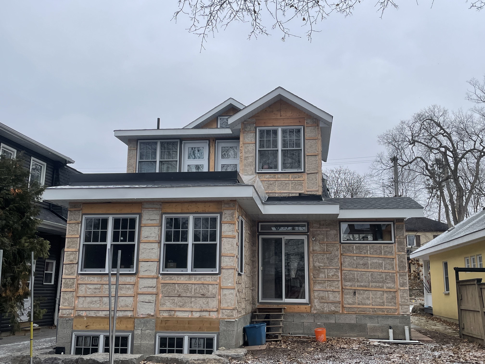
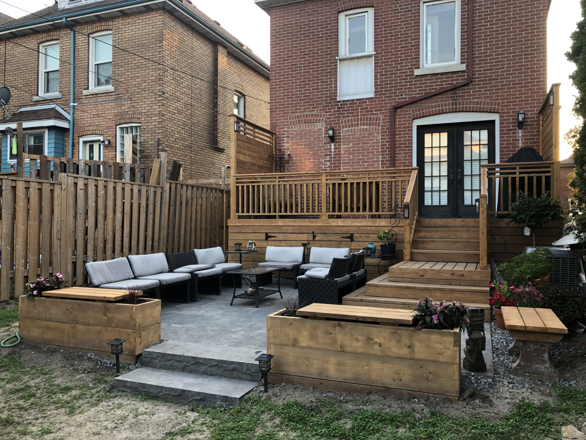
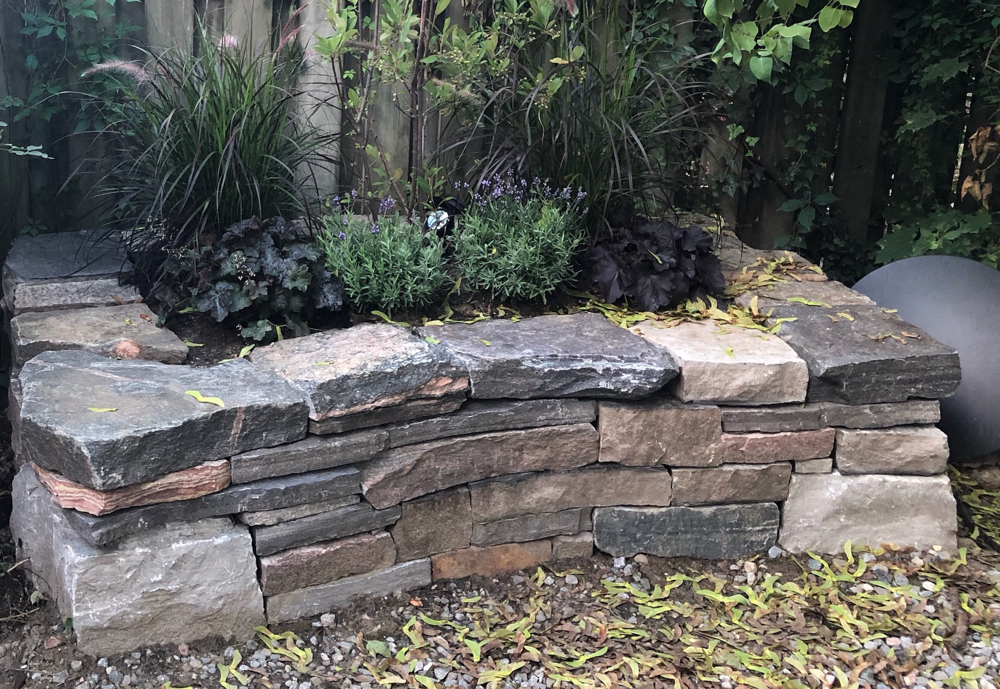
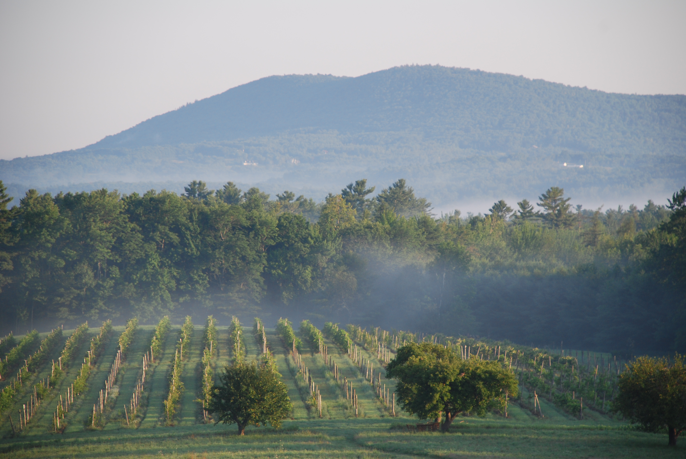
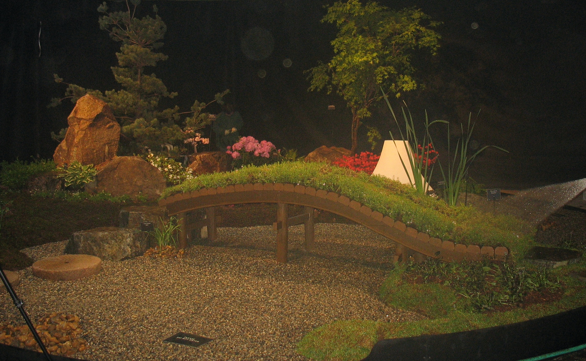

About me:
- Ecological-friendly building specialist
- Lead builder for Buildwell Construction
- Attending Masters in Architecture, Carleton University
- Landscape Designer
- Studying for intermediate French fluency
- Training for the nordic Canadian Ski Marathon
- Writer
Buildwell Construction
I've worked with Buildwell Construction since 2021.
It's primarily a clay-slip straw building company
with a focus on ecologically-friendly building techniques.
I started as a subcontractor with Buildwell and
became lead builder in 2022. We've built 3 houses
and 2 additions in the Ottawa region since I started
with the company.

Coywolf Designs
I started Coywolf Designs when I moved to Toronto in 2015. I was the designer and
lead builder for the company. I focused on natural materials, minimal impact construction,
dry-lay stonework, and native plant species.



Cellardoor Winery
I was the vineyard manager and garden designer
for Cellardoor Winery for 4 seasons. I also
aided in the wine-making process after
harvest. My team brought the vineyard from a
fledging endeavor harvesting 2 tons a year in 2010
to a burgeoning agriculture farm that harvested
5 tons in 2012 and 8 tons in 2014.

Seko Designs
I apprenticed as a landscape designer under
Masahito Seko for 2 years. We continued to work
together after my apprenticeship on numerous designs
and installations while I resided in Maine,
including several projects at Cellardoor Winery.
